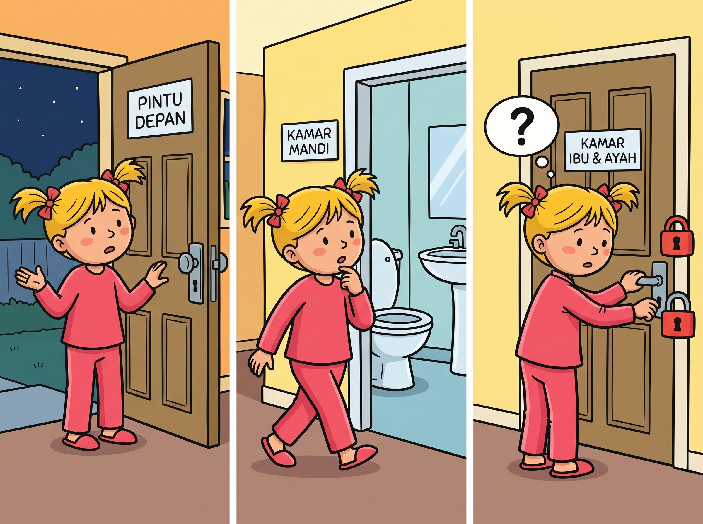
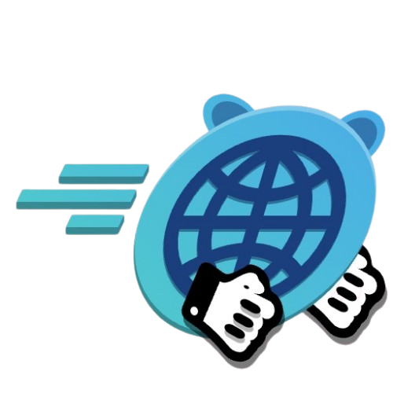

Aturan Main — Baca Dulu!
⚠️ Memindai direktori komputer orang lain tanpa izin itu DILARANG
- Selalu minta izin dulu. Memindai port komputer atau jaringan orang lain bisa melanggar hukum — sama seperti menggoyang-goyang gagang pintu rumah tetangga satu per satu untuk tahu mana yang tidak dikunci.
- Jangan pindai Wi-Fi sekolah, kantor, atau warnet. Walaupun kamu tersambung ke sana, jaringan itu bukan milikmu.
- Hanya pindai komputermu sendiri — atau target latihan khusus yang memang dibuat untuk belajar.
- Kalau menemukan pintu terbuka yang berbahaya, laporkan. Beri tahu orang dewasa atau pemiliknya. Jangan coba masuk.
- Ilmu ini untuk mengunci pintu, bukan membukanya. Penjaga yang baik melindungi, bukan menyusup.
Apa Itu Direktori?
Bayangkan

Kamu berkunjung ke rumah temanmu dan kamu bertanya:
"Pintu depan terbuka. Pintu kamar mandi terbuka. Kenapa pintu kamar orang tua mu tertutup?"
Temanmu menjawab:
"Berarti kamar orang tua ku privasi, tidak boleh orang lain lihat. Hanya orang tertentu yang boleh masuk termasuk aku"
Direktori persis seperti itu, pada website ada beberapa direktori (/admin /login-admin dll) yang tidak boleh orang lain akses, kecuali orang yang diizinkan.
Alat

| Alat | Pertanyaan | Command |
|---|---|---|
| Gobuster |
"Kamu punya berapa pintu dan mana yang terbuka umum"
/admin /login-user /dashboard
|
gobuster -w (website yang dituju)
-w (file.txt)
|
Cara Kerja
Website memiliki banyak pintu umum yang orang lain bisa akses. Tapi ada pintu khusus yang seharunya tidak boleh diakses. Pemilik website kadang lupa untuk menutup erat pintu khusus itu.
Gobuster bisa membaca itu dan memberi kunci khusus kepada kamu untuk membukanya

200 = halaman ada dan terbuka
301 = ada, tapi dialihkan ke tempat lain
403 = ada, tapi dilarang masuk
404 = tidak ada apa-apa
SIMULATION
Kamu akan menggunakan terminal untuk melakukan scanning.
Coba kamu scanning web TopUpDoor
Cara Melindungi Website
| Halaman / Risiko | Cara Menangani |
|---|---|
Halaman Login/login |
Boleh diakses publik. Pastikan proses login tetap aman dan memeriksa akun pengguna. |
Halaman Register/register |
Boleh diakses publik agar pengunjung dapat membuat akun baru. |
Halaman Admin/admin |
Batasi akses hanya untuk pengguna yang memiliki izin. Menyembunyikan URL saja tidak cukup. |
Halaman Debug/debug |
Matikan mode debug saat website online agar informasi penting tidak bocor. |
Kuis Penjaga Pintu
Uji pemahamanmu tentang Scanning Pintu Komputer.